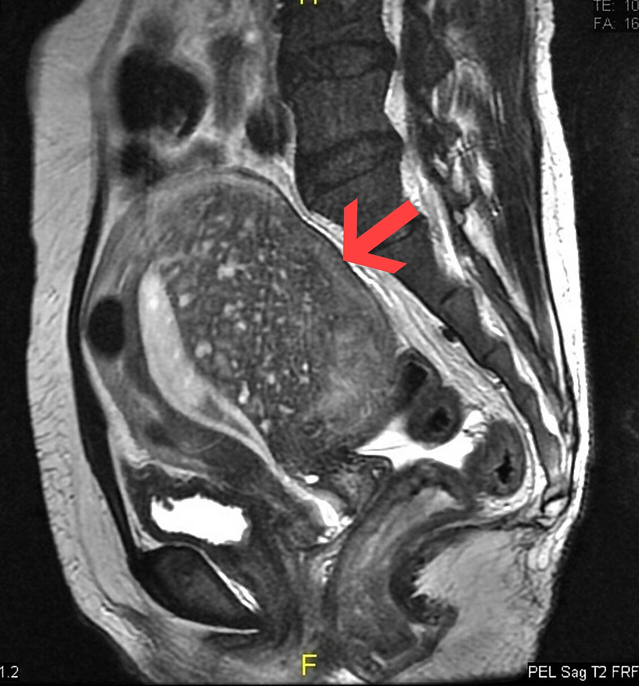

Ficha del catálogo
Adenomiosis uterina
- Sistema
- Reproductor
- Modalidad
- RM
- Región
- Pelvis femenina, útero
- Dificultad
- Intermedio
Consiste en la presencia de glándulas y estroma endometrial dentro del miometrio, con hipertrofia reactiva del músculo circundante. Afecta sobre todo a mujeres en edad fértil avanzada y se manifiesta con sangrado menstrual abundante, dolor pélvico y dismenorrea progresiva. Puede ser difusa o focal y con frecuencia coexiste con miomas, lo que complica la interpretación.
Técnica
La resonancia pélvica es la técnica más precisa porque permite medir la zona de unión y separar la adenomiosis de los miomas. El ultrasonido transvaginal es la exploración inicial y, con equipos actuales, alcanza buena exactitud cuando se buscan de forma sistemática los signos característicos. El estudio se realiza preferentemente fuera de la menstruación para evitar cambios transitorios en la zona de unión.
Qué observar
- Engrosamiento de la zona de unión en secuencias potenciadas en T2
- Bordes mal definidos entre endometrio y miometrio interno
- Focos puntiformes hiperintensos en T2 dentro del miometrio engrosado
- Útero globuloso con asimetría entre la pared anterior y la posterior
- Ausencia de efecto de masa bien delimitado y de seudocápsula
- Focos hiperintensos en T1 que traducen microhemorragias
Hallazgos
El dato principal es el engrosamiento de la zona de unión, que supera los doce milímetros y adopta un aspecto difuso o focal con márgenes imprecisos. Dentro del miometrio engrosado aparecen quistes puntiformes hiperintensos en secuencias potenciadas en T2 que corresponden a glándulas ectópicas, algunos con señal alta en T1 por hemorragia. El útero se ve globuloso, con estriaciones lineales radiadas hacia el endometrio y sin la interfase nítida que define un mioma.
Perlas
La diferencia práctica con el mioma está en los bordes y en la forma, ya que la adenomiosis se difumina hacia el miometrio sano y alarga el útero en el eje afectado, mientras que el mioma es redondeado, con plano de separación y desplaza estructuras. Esa distinción cambia el tratamiento, porque el mioma es enucleable y la adenomiosis difusa no lo es.
Diagnóstico diferencial
- Mioma uterino
- Es una masa redondeada de bordes netos, con seudocápsula y vasos periféricos, que puede calcificar o degenerar.
- Contracción miometrial transitoria
- Desaparece o cambia de forma en secuencias repetidas durante el mismo estudio.
- Zona de unión engrosada de forma fisiológica
- Es simétrica, de contornos netos y sin quistes miometriales ni clínica acompañante.
- Sarcoma uterino
- Es una masa heterogénea de crecimiento rápido con necrosis, restricción marcada de la difusión y bordes infiltrantes.
Simuladores
- Contracción uterina focal durante la exploración
- Mioma intramural con degeneración que borra sus bordes
- Zona de unión mal definida por artefacto de movimiento
Por modalidad
- TC
- No permite valorar la zona de unión y solo muestra un útero aumentado de tamaño de forma inespecífica.
- RM
- Mide la zona de unión, detecta quistes miometriales y separa la adenomiosis del mioma con gran fiabilidad.
- US
- Muestra miometrio heterogéneo con estriaciones, quistes anecoicos y útero globuloso con asimetría de paredes.
Protocolo
Resonancia pélvica con secuencias potenciadas en T2 de alta resolución en los planos sagital, axial oblicuo y coronal oblicuo respecto al eje del útero, complementadas con T1 y con supresión grasa para identificar focos hemorrágicos. Se recomienda antiespasmódico para reducir el movimiento intestinal cuando no está contraindicado. El contraste no es imprescindible y se reserva para dudas diagnósticas o para planear tratamiento.
Clasificación
No existe una clasificación única aceptada de forma universal, aunque el informe debe precisar si la afectación es difusa o focal, qué paredes están comprometidas, el grosor máximo de la zona de unión y la coexistencia de miomas o de endometriosis profunda. Esta descripción es la que orienta la elección entre tratamiento médico, procedimientos conservadores o cirugía.
Errores frecuentes
- Confundir una contracción miometrial transitoria con un foco de adenomiosis
- Medir la zona de unión durante la menstruación y sobrestimar su grosor
- Informar como mioma un foco adenomiótico sin analizar los bordes

adenomiosis zona de unión útero globuloso quistes miometriales resonancia pélvica dismenorrea reproductor